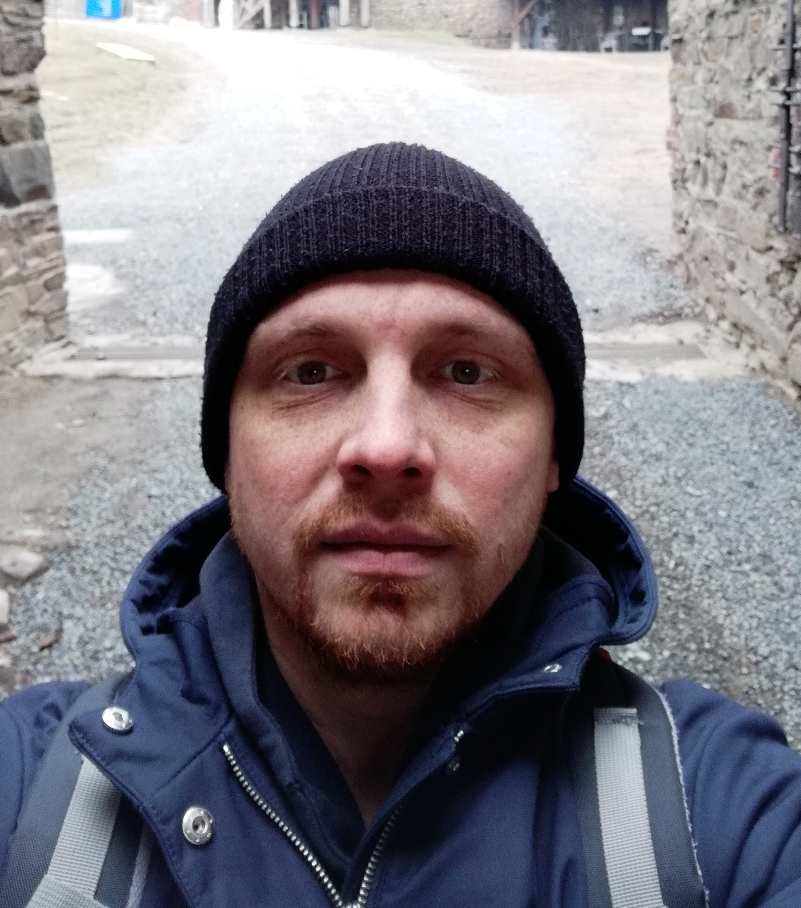

Taras Bazhenka.
Email: bazhenkataras@gmail.com.
Phone number: +375297388555; +375298673579.
My goal is to get into the it sphere, because this is the future and this sphere has big potential.
I would like to constantly grow as front-end developer, as well as to develop team work skill.
The team is important because it creates an atmosphere in which you want to learn and develop.
I like to see process and final result of my work.
I have some skills in Html and CSS. Also I am familiar with the SASS preprocessor, Bootstrap 4.
I don′t have the link to my work, only files with code.
I have experience of creating a website in Html and native Css.
At the beginning of this year summer, I was studying at the ″IT Academy″.
I haven′t had any practice in a long time. Currently I work with a tutor. I want to consolidate the A2 level in the nearest future.